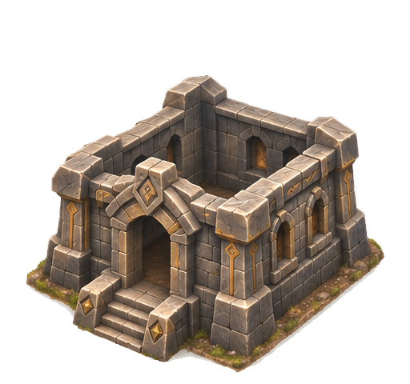
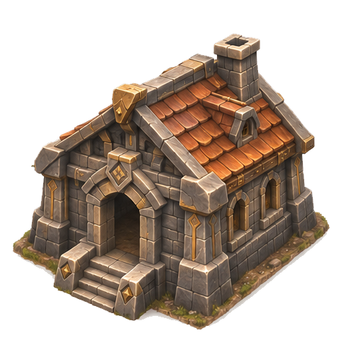

04 – Aufbau
Der Ancient Lord regt sein Volk zum Bauen an und weist jedem Gebäude seinen Platz zu. Die Arbeiter übernehmen die Ausführung. Sobald die Ressourcen für den nächsten Bauabschnitt bereitliegen, führt ein Arbeiter ihn aus. Fehlt Material, ruht der Bau auf dem erreichten Stand.
Der Bau einer Sippenhalle
Jedes Gebäude entsteht in sechs Phasen, von der Bodenplatte bis zum fertigen Bauwerk. Jede Phase kostet ein Sechstel der Gesamtkosten. Die Sippenhalle der Tiefenschmiede zeigt, wie jeder dieser Schritte auf der Karte sichtbar wird.

Phase 1 · Bodenplatte

Phase 2 · Fundament

Phase 3 · Mauerbau

Phase 4 · Rohbau

Phase 5 · Dach

Phase 6 · Fertige Sippenhalle

Baumenü-Kategorien
- Profan
- Militär
- Arkan
- Alchemist
- Reichtum
Profane Tiefenschmiede-Gebäude
- Sippenhaus
- Clanhalle
- Schankstube
- Ahnenmal
- Schmiede
- Runenhaus
- Geodenhaus
- Werkstatt
- Tierhort